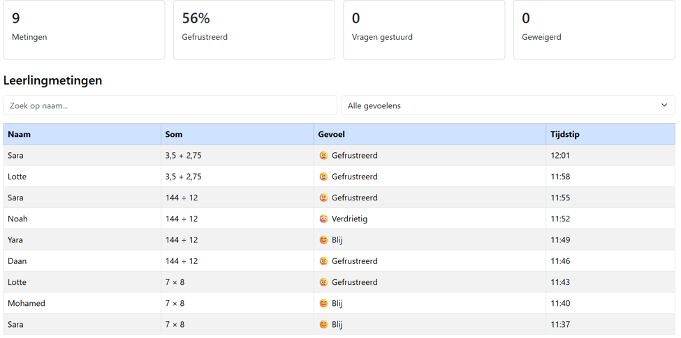
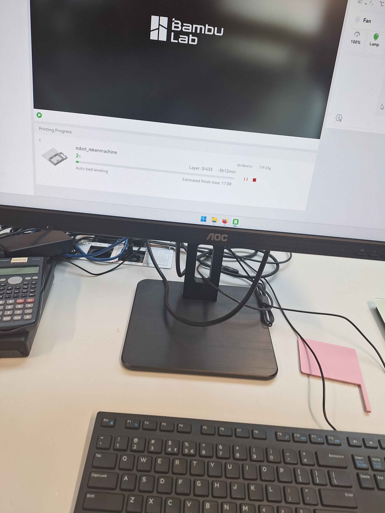
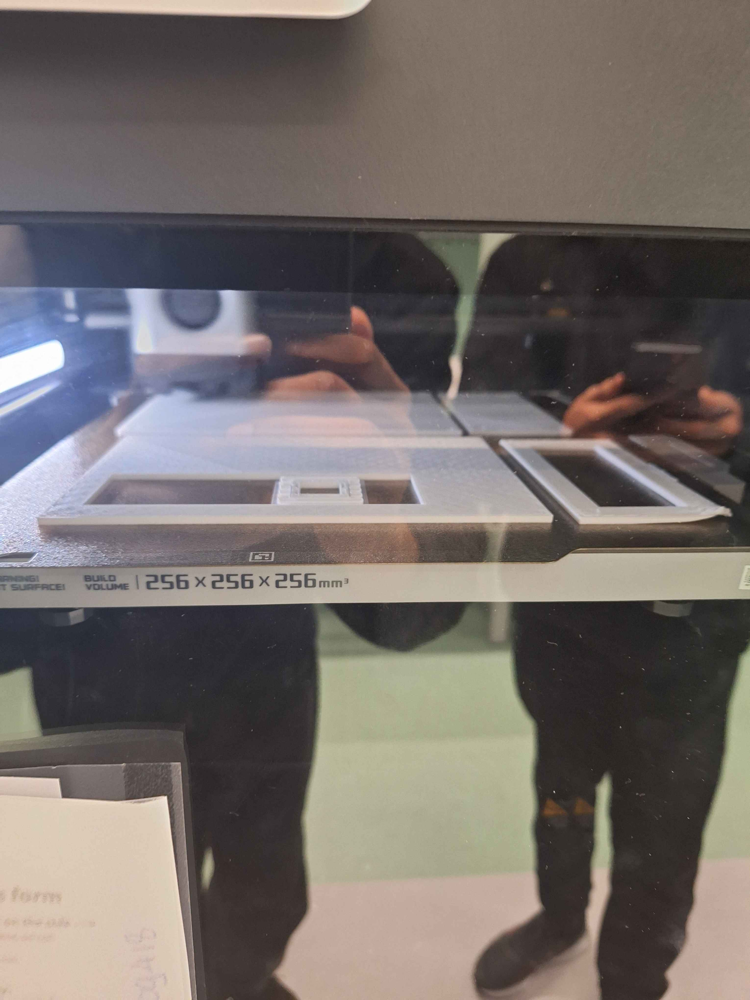
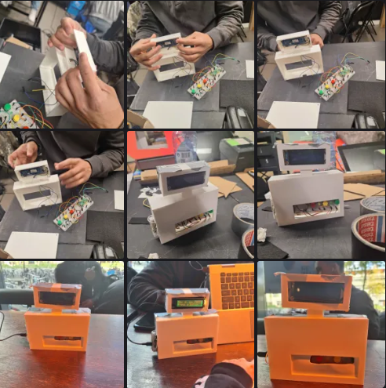

Sprint 2
My ervaring en progressie tijdens Sprint 2.
Introductie
Tijdens Sprint 2 ben ik met meerdere onderdelen van het project bezig geweest. In vergelijking met Sprint 1 heb ik deze sprint aan meer verschillende dingen gewerkt. De belangrijkste onderdelen waren het vernieuwen van het dashboard en het 3D printen van een nieuw lichaam voor Harry.
Waar heb ik aan gewerkt
Het eerste waar ik aan heb gewerkt is het vernieuwen van het dashboard. Onze Product Owner was namelijk niet tevreden over de eerste iteratie vanwege de gebruikte kleuren de hoeveelheid informatie en andere onderdelen van het ontwerp. Het vernieuwde dashboard is een stuk eenvoudiger en overzichtelijker dan de vorige versie. Ik heb ervoor gekozen om Bootstrap te gebruiken omdat dit een gebruiksvriendelijke library is waarmee je snel flexibele en responsive pagina's kunt ontwikkelen. Hierdoor werkt het dashboard ook goed op mobiele apparaten. Daarnaast had ik al eerdere ervaring met Bootstrap, waardoor ik goed wist welke richting ik op wilde met het ontwerp en de ontwikkeling van het dashboard.
Naast de voorkant van het dashboard heb ik ook aan de backend gewerkt. Hierbij heb ik ervoor gezorgd dat het dashboard data kan ophalen en deze vervolgens op de juiste manier kan weergeven.
Het dashboard kan dus nu filtenren op naam emotie en je kan zien op welke tijdstip de som is gemaakt
Code voor dashboard
link href="https://cdn.jsdelivr.net/npm/bootstrap@5.3.3/dist/css/bootstrap.min.css" rel="stylesheet">
div class="table-responsive">
table class="table table-striped table-bordered table-hover">
thead class="table-primary">
tr>
th>Naam/th>
th>Som/th>
th>Gevoel/th>
th>Tijdstip/th>
/tr>
/thead>
tbody id="metingenBody">
/tbody>
/table>
/div>
Nieuw dashboard

Een ander onderdeel waar ik aan heb gewerkt is het 3D printen. Tijdens deze sprint was het plan om Harry een nieuwe look te geven. Daarom hebben we als team besloten om een nieuw lichaam voor Harry te ontwerpen en te 3D printen.
Dit hebben we samen als team gedaan. Mijn bijdrage hieraan was bijvoorbeeld het uitvoeren van de opmetingen voor het 3D model en het opzetten van de printer en ondertussen ook nog wat anderen kleine onderdelen ertussen
3D printen


Model Harry

Challenges
Een uitdaging tijdens deze sprint was om het dashboard op een eenvoudige manier te maken terwijl de data vanuit de backend ook goed opgehaald en weergegeven moest worden.
En bij het 3d printen was het zo dat niemand van ons team het ooit heeft gedaan en het makeres lab was ook heel nieuwe voor ons maar we konden om hulp vragen van mensen daar en er was genoeg info te vinden overal dus het lukte wel
Wat heb ik geleerd
Tijdens deze sprint heb ik meer ervaring opgedaan met Bootstrap en het maken van een responsive dashboard. Ook heb ik meer geleerd over hoe de frontend en backend met elkaar samenwerken om data op te halen en weer te geven.
Daarnaast heb ik ervaring opgedaan met het 3D printproces. Ik heb gezien hoe belangrijk goede opmetingen zijn bij het maken van een 3D model en hoe je als team samen aan een fysiek product kunt werken. Ik heb geleerd over de dingen die fout kunnen gaan tijdens 3d printen zoals een te glade bodum plaat of een model te dicht bij de rand
Society 5.0
Voor Society heb ik gebruikerstests uitgevoerd met verschillende mensen. Mijn taak tijdens deze tests was om uit te leggen wat de gebruikers moesten doen en hun antwoorden op te schrijven. Als een gebruiker bijvoorbeeld zei dat 3 + 4 = 8, schreef ik dit op zodat onze robot daarop kon reageren. Dit deden we omdat we op dat moment nog geen text to speech hadden.
Volgende sprint
Volgende sprint wil ik mij richten op het kijken hoe ik het opakken vna emoties dark kan maken en de daarnaast wil ik dus alle verschillende manieren die ik heb bedacht gaan testen bij anderen personen en kijken welke resultaten eruit komen en welke ik dan het best vind passen bij ons project verschillende manieren daarvan